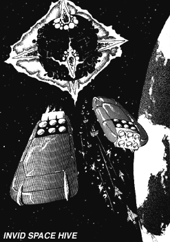
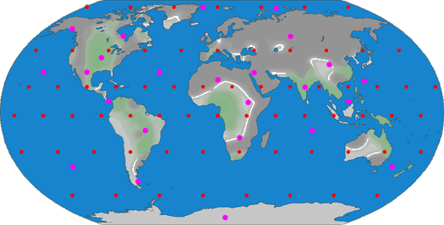

The following material is from
THE THIRD INVID
WAR, a fan supplement by
Dave Deitrich and
Chris
Meadows. Please feel free to use, copy, and distribute
it as you see fit. All we ask is that you give proper credit to us and do not
claim that it is your own work. Comments and suggestions are welcome.
THE INVID SPACE HIVE

BACKGROUND
The tide of Third Invid War seemed to turn against the resistance in early
2040 when reports started coming in of dozens of new lights appearing in the
night sky. Further investigation revealed that these "lights" were some sort
of space stations being constructed by the Invid all around the Earth. What
was even more disturbing was that initial reports showed that over half of the
Invid occupation force was involved in the construction of the space stations.
(This would also explain why the size of the Invid occupation force was so
small during the first few years of the Third Invid War) This massive Invid
construction effort would continue for two more years before their project was
complete.
It would later be revealed that the Invid were constructing a series of
Orbiting Hives, specifically constructed for anti-starship operations. The
Stage Six Invid in charge had analyzed the results of the Second Invid War,
and concluded that the humans' victory was for the most part due to the
supplies and personnel they managed to get from the REF at Tirol. The Stage
Six Invid decided that the best way to prevent a repeat of history was to
prevent any REF ships or troops from reaching Earth. To this end, they
constructed a series of "Space Hives" armed with powerful anti-starship
weaponry and defended by a modified hive shield. These orbiting hives would
also be able to serve as bases for the Invid space forces, which made up
roughly 40% of the Invid occupation forces.
Invid Space Hives look somewhat similar to stilt hives, except that instead of
stilts, the central hive has 6 large spikes sticking out of them, equally
spaced along all of the sphere's axes. These spikes contain the massive
anti-starship cannons that make up the main armament for the hive, as well as
the shield generators that protect it. The cannons have no nozzle or any
other feature that give them away, except for the fact that they're colored
differently than the rest of the hive. The central globe of the hive consists
mostly of docking bays, where the various space Invid can land to refuel and
rearm. The major docking bays on the station are big enough to hold multiple
Troop Transports or Cargo Transports. All docking bays are protected by force
fields that keep atmosphere in while allowing ships and mecha to pass through
them freely. These force fields can be strengthened in intensity to keep
invaders out of the hive (though they are still vulnerable to Destabilizer
cannons). At the center of the central hive is the massive power core that
powers the entire station. The power cores of Space Hives are 30% larger than
those typically found in Earth hives. This is due to the tremendous amount of
power that the anti-starship cannons and the defense shield require.
At the height of the Third Invid War there were 92 Space Hives orbiting the
Earth. 24 of these hives were Sector Command Space Hives, which served
as command and control bases for the Stage 6
Invid during the war. The sector command hives were 25% larger than
standard hives and contained significantly more troops. Below is a rough map
of the locations of the orbiting hives during the war. However, it is
important to note that while the hives spent most of their time in
geosynchronous orbit over their assigned location, they can and often did
alter their orbit to circle over trouble spots when necessary.

Rough Orbital Placement of Space Hives, Circa 2045
 Standard Space Hive
Standard Space Hive |
 Sector Command Space Hive
Sector Command Space Hive |
SCHEMATICS
 Click on the icon to the left to view the schematics of the Space Hive,
based on data collected by REF Intelligence.
Click on the icon to the left to view the schematics of the Space Hive,
based on data collected by REF Intelligence.
RPG STATS
- REF Nickname: "Death Stars"
Size:
- 4 miles long, wide, and high. The central hive sphere is usually
3 miles in diameter. Sector Command Space Hives are 5 miles in diameter
(including spikes).
Typical Number of Troops: ~1000
NOTE: Increase the above numbers by 25% for a sector command space
hive. Also include 1 Warlord Battloid
w/ Stage Six pilot and 2
Brains in addition to the above troops.
Perimeter Defense: 10-20 patrols of 2D4 Space Troopers accompanied
by
4D4 Armored Scouts or 4D4 Attack Scouts. Mixed patrols of other
Invid mecha are also possible at the GM's discretion.
M.D.C. BY LOCATION
(1) Weapons Spike (6): 10,000 each
Anti-Starship Cannons (6): 2,000 each
Outer Wall (10 ft area): 400
Inner Wall (10 ft area): 200
Antigravity Domes (50): 300 each
Energy Barriers of outer portals (40): 300 each
Spherical Energy Force Field: 1,000,000
(2) Power Core (1): 2,000
(3) Main Hive: 20,000
NOTE: Increase all the above values (except for the Force Field)
by 25% for a sector command space hive.
- Depleting the MDC of a weapon spike will effectively destroy it.
This will also completely destroy the anti-starship cannon inside
(the other 5 will still function, though). However, the best news
of all is that destruction of even ONE weapon spike will completely
destroy the force field generator! NOTE: the force field must be
down/damaged before the weapon spike may be attacked.
- Depleting the MDC of the central power core will cause an explosion
that effectively destroy the station. The Invid Brain will
automatically be killed, in addition to (1D10x10)% of all Invid
still remaining on the station. The burning hulk of the space hive
will fall out of orbit and burn up in the atmosphere within 1D6
days.
- Depleting the MDC of the main hive will effectively destroy the
station. 100% of all Invid left on the station are killed. The
burning hulk of the space hive will fall out of orbit and burn up
in the atmosphere within 1D6 days.
SPECIFICATIONS
- Flight:
- The Antigravity Domes are mainly for station-keeping
purposes only. If necessary, the space hive can adjust its orbit,
or even travel to the moon's orbit or beyond. It will take a
space hive 24 hours to transfer from Earth orbit to Moon orbit.
Space Hives do NOT have fold generators!
WEAPON SYSTEMS
- ANTI-STARSHIP CANNONS. The main armament of the Space Hive are six
massive anti-starship cannons that are even more powerful than the
main gun of an Ikazuchi starship! The cannons are spaced equidistant
around the hive so as to leave no arc undefended. In fact, most
times 3-5 cannons can be brought to bear on a single target. Each
cannon has an effectively unlimited arc of fire (except when blocked
by the station itself).
- Primary Purpose: Anti-spacecraft/assault
- Range: 300,000 miles (480,000 km)
- Mega-Damage: 1D6x1000 M.D.
- Rate of Fire: Each cannon may fire ONCE every other melee.
- Payload: Effectively Unlimited.
- Note: These cannons are meant for use against spacecraft only. All
bonuses/penalties for target size apply. See the table on page 53
of the Sentinels RPG.
- FORCE FIELD. The weapon spikes on the hive can also generate a force
field to protect the hive from harm. When this field is activated,
the shield extends from each spike to all the other spikes
surrounding it, effectively making the station look like it is
encased in a diamond. NOTE: The Anti-Starship Cannons CAN still fire
when the force field is up. HOWEVER, no mecha or ships may be
launched from the hive when the shield is up. A Destabilizer cannon
will penetrate this shield just like a normal hive shield.
- Primary Purpose: Defense
- Mega-Damage Capacity: 1,000,000 MDC
- Note: Can regenerate at a rate of 10,000 MDC per hour.
This document was originally converted to HTML by
Joshua Megerman
megermjs@newton.physics.drexel.edu
st92bb10@post.drexel.edu
 Click on the icon to the left to view the schematics of the Space Hive,
based on data collected by REF Intelligence.
Click on the icon to the left to view the schematics of the Space Hive,
based on data collected by REF Intelligence.